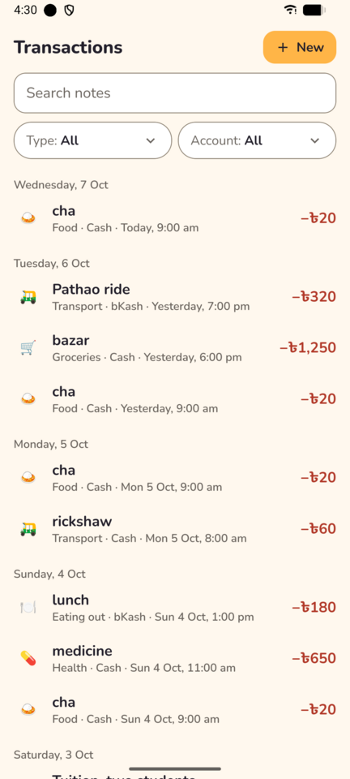
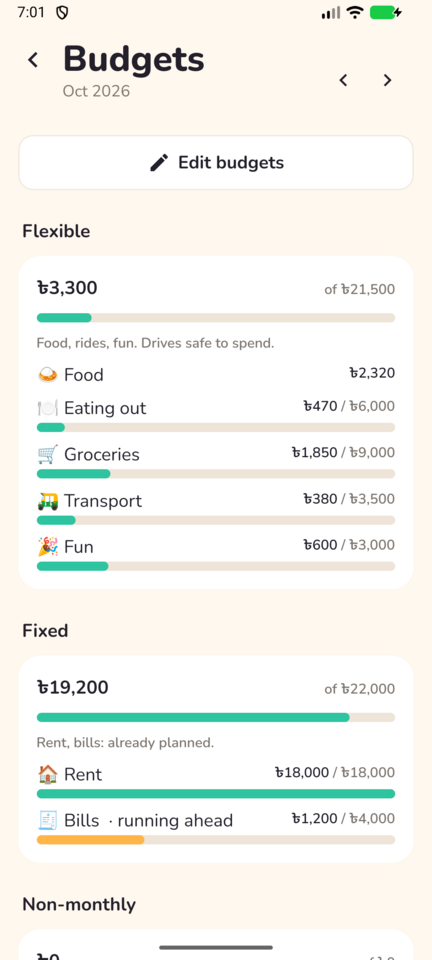
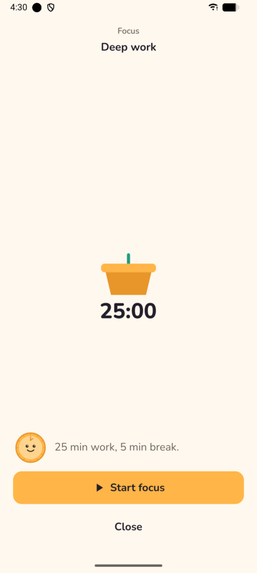
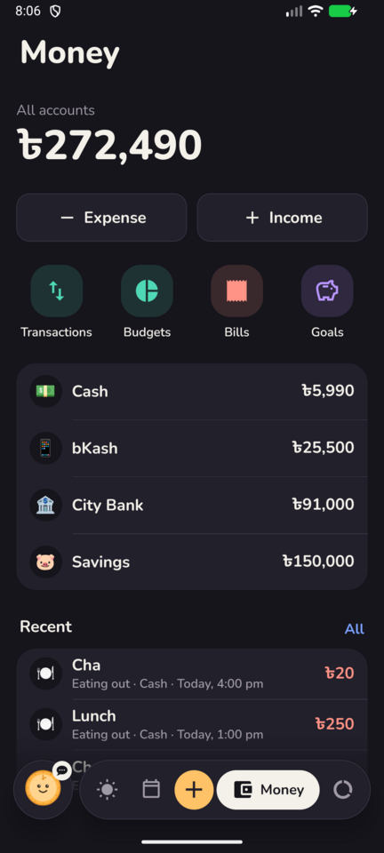
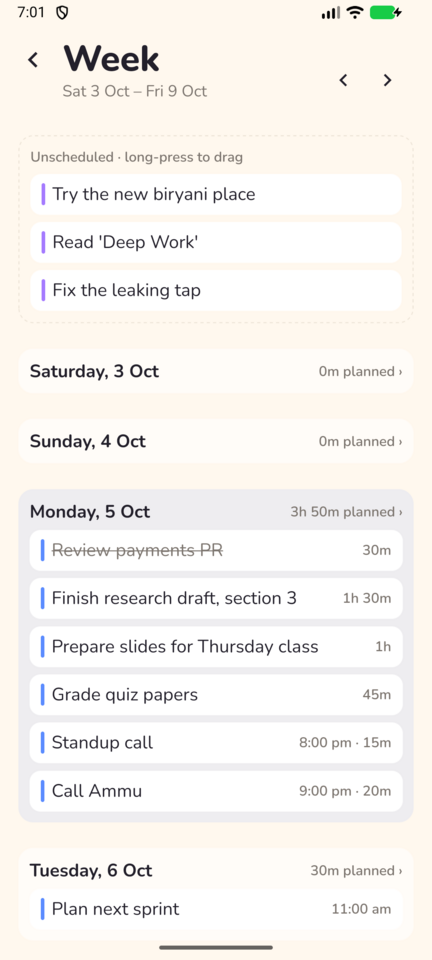
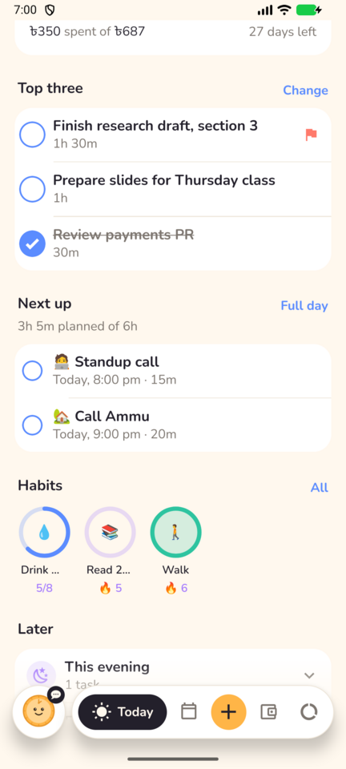
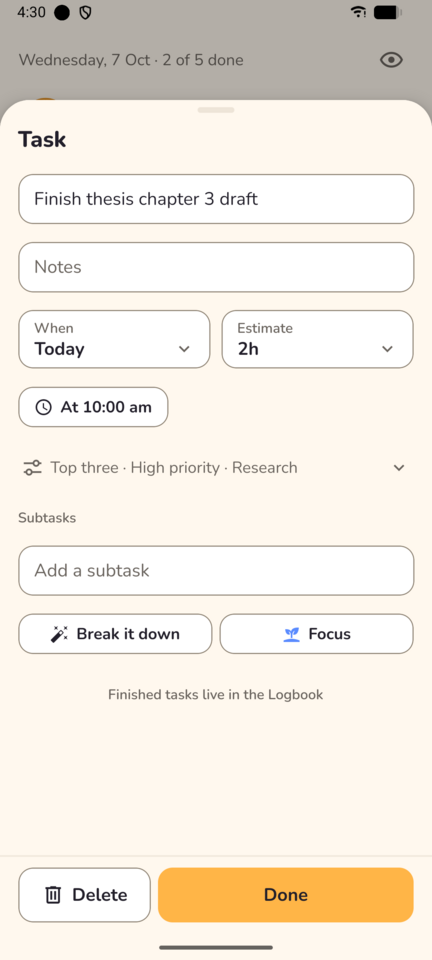
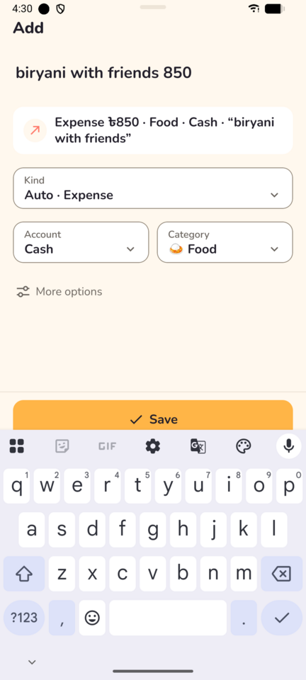
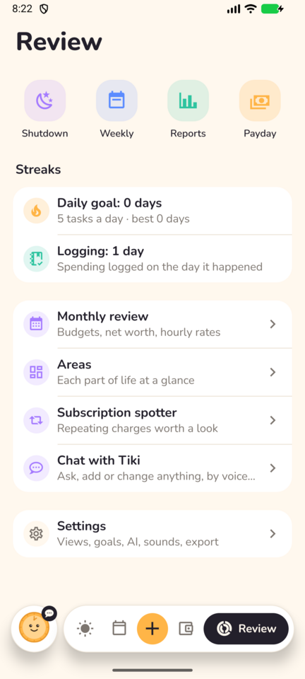
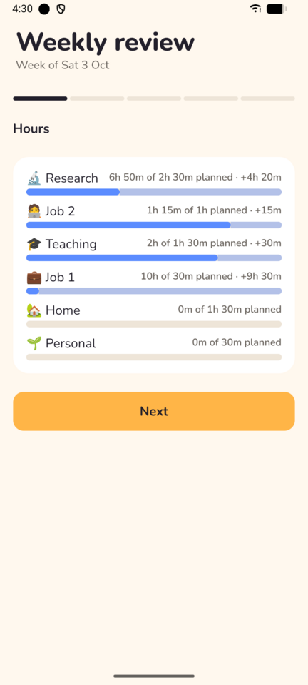

6. Findings
Paths are relative to apps/mobile/src/ unless they start with packages/ or docs/. Grouped by category and sorted by severity within each group.
6.1 Data safety and user control
UX-001 · Sign out silently discards unsynced offline changes
Critical · User control / data loss- Where
features/settings/account-section.tsx:38;lib/auth.ts:103-109;lib/user-data.ts:20-23- What's wrong
- One tap on "Sign out" signs out at once, with no confirmation.
clearUserData()clears the mutation cache, which is the offline outbox. Anything logged on a rickshaw with no signal and not yet synced is lost. The same path runs on any 401 (auth.ts:111). The button is the first control on the Settings screen. - Evidence
// user-data.ts await queryClient.cancelQueries(); queryClient.getMutationCache().clear(); // queued offline writes queryClient.clear(); // account-section.tsx:38 <Button label="Sign out" ... onPress={() => void signOut()} />- Why it matters
- The product promises "Works offline… changes queue up, then sync". Losing expenses without a word breaks trust in the money numbers.
- Recommendation
- Check
usePendingWrites()first. If it is above 0, show a sheet: "3 changes haven't synced yet. Sync now / Sign out anyway". Otherwise use a light confirmation, since sign-out also wipes the phone. Move Account to the bottom of Settings. For a 401, keep the outbox and re-authenticate instead of wiping. - Effort
- S
UX-015 · Quick-add "Saved" has no detail and no Undo
Medium · User control / feedback- Where
features/quick-add/quick-add-sheet.tsx:98-105- What's wrong
- After Save, the snackbar says only "Saved". The parser can guess wrong (a category, account or kind), and the sheet has already closed. Deletes, completions and snoozes all get "Deleted X · Undo".
- Evidence
for (const request of requests) send(request); haptic.success(); playSound("pop"); notify("Saved"); router.back();- Why it matters
- Capture speed depends on trusting the parser. Undo makes a misparse cheap to fix.
- Recommendation
- Use the preview text, e.g.
notify(`Saved: ${preview}`, { label: "Undo", onPress: () => send({ method: "DELETE", ... }) }). Ids are made on the client, so the DELETE path is known. - Effort
- S
UX-016 · Bulk "Move" and "Today" buttons act without preview or Undo
Medium · User control- Where
features/today/later-today.tsx:40-53(move low-priority tasks to tomorrow),:75-88(rescue overdue)- What's wrong
- One small secondary button moves an unknown set of tasks. The server decides which ones, and the snackbar has no Undo. The confirmation is shown before the server responds.
- Why it matters
- Users can't predict the result and can't take it back. That makes the gentle feature feel risky.
- Recommendation
- Return the moved ids from the API. Name them in the snackbar ("Moved 3 tasks to tomorrow") with Undo that restores
doAt. Or open a small sheet listing the tasks with checkboxes. - Effort
- M
UX-017 · A habit ring resets to zero on one extra tap
Medium · Error prevention- Where
features/habits/habit-chips.tsx:212-218- What's wrong
- When the count is at target, the next tap sets it to 0 (
habit.todayCount >= habit.targetCount ? 0 : +1). A long press also resets. Neither offers Undo. For "Drink water, 8 a day", one stray tap erases a full day. - Why it matters
- Losing progress to an accidental tap is the "broken streak" feeling the product wants to avoid.
- Recommendation
- Stop at target. Make reset a long press with a snackbar "Reset Drink water · Undo". Or keep the cycle but add Undo.
- Effort
- S
6.2 Accessibility
UX-002 · Light-mode semantic colours and muted text fail WCAG AA
High · Accessibility / contrast- Where
- Tokens:
theme/colors.ts:10-21,global.css:5-16. Uses as text:features/today/safe-to-spend-card.tsx:164-168(hero amount in mint),features/money/transaction-row.tsx:97-104(coral amounts),components/ui/section.tsx:54(sky "Change / Full day / All" links),features/habits/habit-chips.tsx:158(grape counts),features/tasks/task-row.tsx:74(coral "Due"),components/ui/text-field.tsx:50-53(coral error text) - What's wrong
- Measured ratios in light mode (full table in Appendix A):
The safe-to-spend hero fails even the 3.0 large-text threshold. Every dark-mode pair passes (6.4 to 16:1).Text on background #FFF8EE on surface #FFFFFF Needed mint #2EC4A0 (hero 44px) 2.09 2.21 3.0 (large) coral #FF7A6B (amounts 17px) 2.41 2.55 4.5 sky #5B8CFF (links 15px bold) 3.00 3.16 4.5 grape #A57BFF (13px counts) 2.90 3.05 4.5 muted #7D7670 (all secondary text) 4.24 4.47 4.5 - Evidence
- The widget already uses darker text-safe variants:
features/widget/safe-to-spend-widget.tsx:16-24(mint#1E9E80, coral#E8604F, sky#3F6FE0, grape#7B4FE0).theme/colors.ts:46even says "Text never uses these colours" about the chart palette, yet the app uses the brighter tokens for text everywhere.Mint hero on white 
Coral amounts 
Mint/mango bars - Why it matters
- PRODUCT.md commits to "WCAG AA contrast in both light and dark themes". The main use is "one-handed in daylight at a shop counter", where low contrast hurts most. The single most important number on the home screen is the worst case.
- Recommendation
- Add text tokens, used only by
Texttones in light mode:mint-ink #13785F(5.41:1 on white),coral-ink #C8412F(4.94:1),sky-ink #2F5FD0(5.72:1),grape-ink #6E44D6(6.07:1). Keep the bright tokens for dots, rings and bars. Darken muted to#6E6862(5.21:1 on #FFF8EE). Run the contrast script in CI. - Effort
- M
UX-003 · Dark-mode snackbar "Undo" is 1.41:1
High · Accessibility / contrast- Where
components/ui/snackbar.tsx:146(bg-ink),:162(tone="mango")- What's wrong
- The snackbar background is
ink, which flips to cream#F4F1EAin dark mode. The action text ismango,#FFC266in dark. Result: 1.41:1, close to invisible. Light mode is fine (9.10:1). - Why it matters
- The spec swaps "Are you sure?" dialogs for an Undo snackbar (spec.txt:223). Every delete, completion and snooze depends on that one button. Dark mode is the "in bed at night doing the shutdown" scene.
- Recommendation
- Use
tone="background"plus bold or underline for the action, or a fixed#8A5A00(the widget's mango text colour, 5.25:1 on cream) when the scheme is dark. Better still, give the snackbar a fixed dark surface in both themes. - Effort
- S
UX-004 · White text on sky and coral fills fails AA
High · Accessibility / contrast- Where
components/ui/button.tsx:11(timevariant: Start focus, Focus, Log time);features/timer/running-timer-bar.tsx:38-44;components/ui/swipe-row.tsx:141-146(Edit/Snooze/Delete tray labels, 13px);features/assistant/message-bubble.tsx:156-163(Delete pill);features/plan/calendar-view.tsx:127-133(selected day);components/ui/shortcut-row.tsx:43-45(11px badge)- What's wrong
- White on sky is 3.16:1 in light and 2.49:1 in dark. White on coral is 2.55:1 in light and 2.15:1 in dark. The labels are 13–17px, so 4.5:1 is required.

Start focus: white on sky - Why it matters
- These are primary controls (start focus, stop timer, delete) and they are hard to read in sunlight.
- Recommendation
- Use
on-mangodark text on sky and coral fills (5.06 to 7.44:1 across both themes), as themoneyvariant already does on mint. Or use the darker text tokens from UX-002 as fills. Also see UX-007: DESIGN.md says semantic colours should be small marks, not large fills. - Effort
- S
UX-005 · Expense amounts have no sign; colour is the only cue
High · Accessibility / colour meaning- Where
features/money/transaction-row.tsx:97-104; seen on Money, Transactions and Today- What's wrong
- Income gets
signed("+৳15,000"). Expenses show "৳62,000" in coral, and outgoing transfers show "৳…" in ink. Spending and money moving between your own accounts look the same except for colour. PRODUCT.md: "Colour is never the only signal (amounts carry a sign…)". - Evidence
<Amount minor={amount} signed={incoming} tone={incoming ? "mint" : tx.type === "transfer" ? "ink" : "coral"} />"৳20" coral, no sign 
Same in dark - Why it matters
- Colour-blind users and people in bright light can't tell money in from money out. Coral already fails contrast (UX-002), so the sign is the only reliable cue.
- Recommendation
- Pass a negative minor value for expenses so
formatAmountprints "−৳62,000" (it already uses U+2212,packages/shared/src/money.ts:70). Show transfers with a ⇄ glyph or "→ bKash". - Effort
- S
UX-006 · TalkBack never reads the safe-to-spend amount
High · Accessibility / screen reader- Where
features/today/safe-to-spend-card.tsx:25-29;components/ui/card.tsx:13-17- What's wrong
- The card is a
PressablewithaccessibilityLabel="Safe to spend today". On Android, a focusable element with a content description announces that label instead of its children's text. TalkBack users hear "Safe to spend today, button" without the amount, the amount spent, the days left or the pace alert. Unverified on a device, but this is standard RN/Android behaviour. - Evidence
<Card onPress={() => router.push("/money/budgets")} accessibilityLabel="Safe to spend today" className="gap-3">- Why it matters
- It hides the answer to one of the app's two core questions ("can I afford it?").
- Recommendation
- Build a full label:
`Safe to spend today, ${formatAmount(left)}. ${formatAmount(spent)} spent of ${formatAmount(daily)}, ${daysLeft} days left`(or "Hidden" in privacy mode), withaccessibilityHint="Opens budgets". - Effort
- S
UX-008 · 18 of 60 Pressables have no accessibilityRole; form labels are not linked
Medium · Accessibility / screen reader- Where
- No role:
features/tasks/task-row.tsx:52(every task row),features/plan/compact-task.tsx:18,features/plan/week-planner.tsx:57,64,features/plan/calendar-view.tsx:81,88,127,features/money/budgets-screen.tsx:62,69,features/money/money-calendar.tsx:68,75,106,features/money/shopping-screen.tsx:174,features/timer/running-timer-bar.tsx:47,features/routines/routine-runner.tsx:92,99,features/tasks/task-sheet.tsx:501,components/ui/swipe-row.tsx:166. Label:components/ui/text-field.tsx:22-36 - What's wrong
- Without a role, TalkBack doesn't say "button", so users can't tell the row is actionable.
TextFielddraws its label as a separateTextand passes noaccessibilityLabelto theTextInput, so fields are announced by placeholder or not at all. Errors are 13px coral (2.55:1) with no live region. - Evidence
- Totals: 60 Pressables, 57
accessibilityRole, 53accessibilityLabel, 10accessibilityHint, 5accessibilityLiveRegion, 1accessibilityActions(Appendix B). - Recommendation
- Add
accessibilityRole="button"at these sites. InTextField, setaccessibilityLabel={label}on the input and give the erroraccessibilityLiveRegion="polite". A Biome or ESLint rule for role on Pressable keeps it fixed. - Effort
- S
UX-009 · Swipe actions and drag-to-schedule are out of reach for TalkBack
Medium · Accessibility / gestures Unverified- Where
components/ui/swipe-row.tsx:153-161;features/tasks/task-row.tsx:56;features/money/transaction-row.tsx:68;features/plan/compact-task.tsx:21- What's wrong
accessibilityActionssits on the wrappingAnimated.View, which is not focusable. TalkBack focuses the inner Pressable, which has no actions, so the "Actions" menu is probably empty. The hints tell screen-reader users to "Swipe right to complete, left for snooze and delete", which they can't do. Planner cards say "Long-press and drag to move" with no alternative action.- Recommendation
- Move
accessibilityActionsandonAccessibilityActiononto the focusable child (pass them through SwipeRow as props). Add "Complete" to the list. Rewrite hints as "Actions available". For planner cards, add "Schedule for…" actions that open the time picker. - Effort
- M
UX-019 · The focus timer announces itself every second
Medium · Accessibility / screen reader- Where
features/focus/focus-screen.tsx:150- What's wrong
- The
mm:sstext hasaccessibilityLiveRegion="polite"and changes every second, so TalkBack reads it out constantly during a 25-minute session. Unverified on a device. - Recommendation
- Drop the live region from the ticking text. Announce only phase changes and whole minutes (e.g. a hidden
Textupdated every 5 minutes). - Effort
- S
UX-020 · No plan for large font sizes; fixed-height containers will clip
Medium · Accessibility / dynamic type Unverified- Where
components/navigation/tab-bar.tsx:47,72(h-12 tab holding a 22px icon and an 11px label);features/plan/calendar-view.tsx:131(h-14 cells) andfeatures/money/money-calendar.tsx:110(h-16 cells); 20 ×numberOfLines={1}; hero 44px- What's wrong
- There are zero uses of
allowFontScalingormaxFontSizeMultiplier. Scaling is on by default (good), but containers are fixed-height. At 1.5–2× the tab labels and calendar numbers will overflow, and "৳272,490" at 88px will wrap. - Recommendation
- Set
maxFontSizeMultiplieraround 1.6 on chrome only (tab labels, calendar cells, badges). Changeh-*tomin-h-*on text containers. UseadjustsFontSizeToFiton hero amounts. Test at 200% on a device. - Effort
- M
UX-030 · Input and secondary-button borders are 1.25:1
Low · Accessibility / non-text contrast- Where
components/ui/text-field.tsx:35(border-line),components/ui/button.tsx:13- What's wrong
- The
linetoken on surface is 1.25:1 in light and 1.27:1 in dark. WCAG 1.4.11 asks for 3:1 for component boundaries. On the cream background, white inputs are barely outlined (task.png: Notes, Repeat). - Recommendation
- Add a
line-strongtoken (#968A7B light = 3.38:1 on surface, #757087 dark = 3.38:1) for input borders only. Keep hairlines for separators. - Effort
- S
6.3 Visual design and colour meaning
UX-007 · Colour meaning has drifted from DESIGN.md
High · Visual design / principle 4- Where
- Focus as grape:
features/today/quick-actions.tsx:28-30,features/widget/safe-to-spend-widget.tsx:282. Unscheduled tasks as grape:features/plan/week-planner.tsx:87,features/plan/day-timeline.tsx:144. "Timed task" dot as grape:features/plan/calendar-view.tsx:146. User-picked habit colours across the palette:features/habits/habit-sheet.tsx:21,features/habits/habit-chips.tsx:134-146. Large sky fills:button.tsx:11,running-timer-bar.tsx:38. Coral heat fill:money-calendar.tsx:112-115. - What's wrong
- DESIGN.md: "blue for time… purple for habits… semantic colours appear as small marks, not as large fills; mango is reserved for the one primary action". In the app: Focus (time) is purple. Planner task bars are purple. Habit rings on Today come in sky, grape and mint (today2.png). The Budgets "running ahead" bar is mango (budgets.png). Start focus is a full-width sky slab.

Purple task bars 
Multi-colour habit rings 
Widget: Focus in purple - Why it matters
- "So I always know which half of the app I'm in at a glance" (spec.txt:185). Once purple means three things, it means nothing.
- Recommendation
- Focus, the timer and all planner bars use sky. Keep the habit ring colour fixed to grape and use the habit's emoji for identity. Show "running ahead" as a coral text mark, not a mango bar. Change the time button to secondary style with a sky icon.
- Effort
- S
UX-011 · Tab bar and FAB differ from the design spec
Medium · Visual design / ergonomics- Where
components/navigation/tab-bar.tsx:47,67,72,104-114- What's wrong
- DESIGN.md: "centre mango FAB (64 dp)… Icons 26, labels 12". The code uses a FAB of
h-12 w-12(48 dp), icons of 22 and labels of 11px. The Tiki chat button (64 dp) sits left of the capsule, so the FAB is about 36 dp right of screen centre. - Why it matters
- Capture is the product's main action. A smaller, off-centre FAB is easier to miss one-handed.
- Recommendation
- Bring the FAB back to 56–64 dp, raised slightly above the capsule and centred on the screen. Move the Tiki chat button to the Today header or into the FAB's long-press. Use 12px labels and 24–26 icons.
- Effort
- M
UX-013 · Edit sheets and filters are rows of chips (an anti-reference)
Medium · Visual design / minimalism- Where
features/tasks/task-sheet.tsx:275-441(Do it ×7, deadline, top three, urgency, energy ×2, estimate ×6, area, project chips); Transactions filter (transactions.png); Settings (settings.png); quick-add kind rowquick-add-sheet.tsx:159-168- What's wrong
- PRODUCT.md lists "rows of colourful chips… competing for attention" and "form-like screens" as anti-references. DESIGN.md asks for a compact picker field ("Cash ▾") in sheets instead of rows of chips. The task sheet has about 25 chips across 5 groups, and quick-add's 5-chip kind row runs off the edge ("Time" is cut off in quickadd.png).

Task sheet 
Kind chips clipped - Recommendation
- The task sheet should show title, notes, a "When ▾" picker (Today, Tomorrow, Evening, Pick date, Someday) and an "Estimate ▾" picker. Hide priority, energy, urgency, area and project behind "More". In quick-add, show the kind chips only when
confidenceis low, and show the inferred kind as a single "Expense ▾" picker otherwise. Transactions: one "Filter ▾" picker. - Effort
- M
UX-025 · Text sizes outside the type scale (9px, 11px)
Low · Typography- Where
features/money/money-calendar.tsx:122andfeatures/plan/calendar-view.tsx:150(text-[9px]);tab-bar.tsx:72andshortcut-row.tsx:44(text-[11px]);segmented.tsx:28(13px muted labels);text-field.tsx:35(text-base16 against body 17)- What's wrong
- The smallest DESIGN.md step is Caption 13. A 9px spend figure in the money calendar can't be read on a rickshaw.
- Recommendation
- Use 13 as the floor. In the calendar, show spend only for the selected day, below the grid.
- Effort
- S
UX-022 · Accent themes don't reach useColors()
Low · Theming consistency
- Where
features/settings/reward-theme.ts:34-42;theme/colors.ts:41-43;components/navigation/tab-bar.tsx:84- What's wrong
- "Mint breeze" and "Grape dusk" override the CSS variables only. JS colours from
useColors()stay Classic, so the tab-bar fade goes to#FFF8EEover a mint or lilac background, leaving a visible band. Muted text on those backgrounds drops to 4.16:1 and 4.03:1. Unverified visually. - Recommendation
- Make
useColors()merge the active reward theme, or draw the fade with a class-based background. - Effort
- S
UX-027 · Money calendar uses large coral fills with a light-mode colour in both themes
Low · Visual design / dark parity- Where
features/money/money-calendar.tsx:112-115- What's wrong
rgba(255,122,107, 0.12 + intensity*0.55)is hard-coded light coral. Up to 67% coral fills on big-spend days read as an alarm, and the colour doesn't adapt to dark mode.- Recommendation
- Use a small coral dot or bar scaled by intensity, with neutral cells and the token colour.
- Effort
- S
UX-028 · Area colour swatches are announced as hex codes
Low · Accessibility / content- Where
features/plan/area-sheet.tsx:21,110-113;features/habits/habit-sheet.tsx:21- What's wrong
- TalkBack reads "Colour #5B8CFF". The swatches are light-mode hex values that never adapt to dark. Colour is the only identity on area chips.
- Recommendation
- Store token names ("sky", "grape"…), announce "Blue" or "Purple", and draw from the palette per scheme.
- Effort
- S
6.4 Layout, ergonomics and flows
UX-010 · Ten touch targets are below 48 dp
Medium · Mobile ergonomics- Where
-
Location Size (dp) hitSlop features/routines/routine-runner.tsx:92,99(Move up / Remove step)32 wide none features/routines/routine-runner.tsx:37(step timer)40 tall none features/money/shopping-screen.tsx:174(remove item)40 wide none components/ui/segmented.tsx:25(all segmented controls)44 tall none features/assistant/message-bubble.tsx:150,160(Keep / Delete)44 tall none features/plan/area-sheet.tsx:110(colour swatch)44×44 none features/review/subscriptions-screen.tsx:14144 tall none features/plan/compact-task.tsx:20(py-2.5, about 44)~44 none features/tasks/task-sheet.tsx:501(Logbook link, py-2 + 13px)~34 none features/review/shutdown-flow.tsx:68-83,104-117(row text beside checkbox isn't tappable)48 box only 10 - What's wrong
- PRODUCT.md and the spec both say every target is at least 48 dp. The shared components comply; these call sites don't.
- Recommendation
- Use
min-h-12, or addhitSlopto reach 48. Make the shutdown and pick rows fully pressable, asTaskRowis. - Effort
- S
UX-012 · Today's "what now?" sits below the fold
Medium · Information hierarchy / principle 1- Where
app/(tabs)/index.tsx:46-52; today.png- What's wrong
- The order is: date line → 34px greeting with a 72px Tiki → 4 shortcut tiles (about 100 dp) → safe-to-spend card → Top three → Next up. On a 960px-tall screen, Next up's rows are hidden behind the tab bar. The shortcut tiles repeat the FAB and the quick-add kinds.
Next up cut off - Why it matters
- Principle 1: answer "what now?" and "can I afford it?" before anything else. Right now a greeting and a launcher answer first.
- Recommendation
- Fold the greeting into one line beside Tiki ("Good evening · 1 of 5 done"). Turn the shortcuts into a single row of compact pills, or drop them (the FAB plus a kind picker covers them). Show the first Next-up item inside the hero area ("Next: Standup call, 8:00 pm").
- Effort
- M
UX-014 · Shutdown checkboxes don't respond to taps
Medium · Feedback / system status- Where
features/review/shutdown-flow.tsx:68-79(habits),:104-114(tomorrow's top three)- What's wrong
- Both lists render
<Checkbox checked={false} …>. Habit ticks callsend()with no optimistic cache update and nolabel. Top-three ticks patch only the Today cache, not the shutdown query. The box pops, but the row stays unticked until a refetch about 250 ms after the server confirms. Offline, it never ticks. Picking a 4th shows "Three is enough.", which is abrupt. - Recommendation
- Keep the picked state locally or patch
keys.shutdown. Move ticked habits into a "Done" group. Replace the toast with a disabled state and the caption "3 of 3 picked". - Effort
- S
UX-023 · The running-timer bar covers the end of Today
Medium · Layout Unverified- Where
components/ui/screen.tsx:65(bottom padding 120 + inset);features/timer/running-timer-bar.tsx:32(bottom = inset + 12 + 64 + 8, height about 56)- What's wrong
- The bar's top edge is about inset + 140 dp, but the scroll padding is only inset + 120. The last ~20 dp of Today (the "Later" group) can't scroll clear of the bar while a timer runs.
- Recommendation
- Pass extra bottom padding to
Screenwhenrunningis set (e.g. abottomInsetprop of 72). - Effort
- S
UX-024 · Inputs outside sheets have no keyboard avoidance
Medium · Keyboard handling Unverified- Where
- Only
components/ui/sheet.tsx:7-20,33andfeatures/assistant/assistant-sheet.tsx:26track the keyboard. In-screen inputs are not handled:features/money/goals-screen.tsx:138(Add money),features/money/shopping-screen.tsx:119,197,features/review/payday-plan.tsx:91,104,features/routines/routine-runner.tsx:85-91, the Transactions search. - What's wrong
- With Android edge-to-edge (RN 0.86),
softwareKeyboardLayoutMode: "resize"(app.json) may not resize the window. Fields low on aScreenScrollView can end up under the keyboard. The Sheet's manual padding suggests the team has already run into this. - Recommendation
- Move
useKeyboardHeight()padding intoScreen, or useautomaticallyAdjustKeyboardInsets/ react-native-keyboard-controller. Better still, move these inline inputs into sheets, as the spec's interaction rules ask ("Creating and editing happen in bottom sheets"). - Effort
- M
6.5 Content, microcopy and localisation
UX-018 · Error copy written for developers reaches the user
Medium · Microcopy / error recovery- Where
lib/http.ts:20-26;lib/query-client.ts:43-45;components/ui/snackbar.tsx:149(numberOfLines={2});lib/api.ts:34;app/login.tsx:126-131;components/ui/empty-state.tsx:92- What's wrong
- A failed write shows
"<label>: Can't reach the server at https://… Check that it's running and you're on the same network.", cut to 2 lines. Server errors fall back to"Request failed (500)". The sign-in screen footer shows the API host (login.png: "10.0.2.2:3000"). The ErrorState says "Check the connection to your server".
Dev host on sign-in - Why it matters
- The brand voice is "short and friendly", and the user isn't meant to think about a server. Writes are queued and will retry, so the alarming message is also misleading.
- Recommendation
- Map error types to copy: unreachable → "Saved on this phone. It'll sync when you're back online". 5xx → "Something went wrong on our side. Your change is kept and will retry". Show the host only in a debug build or behind a long press on the version.
- Effort
- S
UX-021 · No Bangla digits and no lakh grouping for amounts
Medium · Localisation- Where
packages/shared/src/money.ts:51-53(thousands grouping),:79-80(parseAmountToMinorregex is ASCII\donly);packages/shared/src/quick-add.ts:173,203(ASCII digit patterns). No০-৯handling anywhere in the repo.- What's wrong
- README: "Bangla and English, typed or spoken, in quick-add". Typing "চা ২০" or "+৪৫০০০ বেতন" isn't recognised locally, so it falls to the AI parser (not available offline or without a key). Amount fields reject Bangla digits. Totals show "৳272,490"; Bangladeshi convention is "৳2,72,490".
- Recommendation
- Normalise
[০-৯]to ASCII at the start ofparseQuickAddandparseAmountToMinor(onereplaceusing a 10-entry map). Add agrouping: "lakh" | "intl"setting, defaulting to lakh for BDT. - Effort
- S
UX-026 · Small leftovers of guilt UI: zero streaks, over-plan bars, the drooping plant
Low · Microcopy / principle 5- Where
features/review/review-home.tsx:97-98("Daily goal: 0 days · best 0 days");features/habits/habit-list.tsx:107-111("1/7 this week" on a daily habit);features/review/weekly-review.tsx:94-101("11h of 1h planned" shows the same full bar as on-plan);features/focus/focus-screen.tsx:153-156("The plant missed you");features/plan/week-planner.tsx:117(coral over-capacity text)- What's wrong
- None of these scold, but each shows a shortfall first. review.png opens Streaks with "0 days" twice.

"0 days · best 0 days" 
11h of 1h = full bar - Recommendation
- Hide a streak at 0 or replace it with "Start a streak today". Show weekly habit progress as dots for days done. In weekly review, show over-plan in a different shade with "+10h". Change the plant line to "Back with it. The plant perks up".
- Effort
- S
UX-029 · README screenshots are behind the code
Low · Documentation- Where
docs/screenshots/*.png(last commit1f25750, 2026-10-05) againstcomponents/navigation/tab-bar.tsx(871e55b, 2026-10-06) and the split Settings pages- What's wrong
- The screenshots show the old growing-pill tab bar and a single-page Settings. Reviewers, and Google OAuth verification, see a different app from the one that ships.
- Recommendation
- Re-shoot after the fixes in this report. Add a short checklist item: "UI change → refresh screenshots".
- Effort
- S